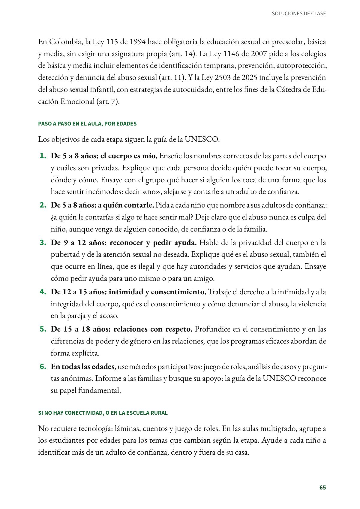
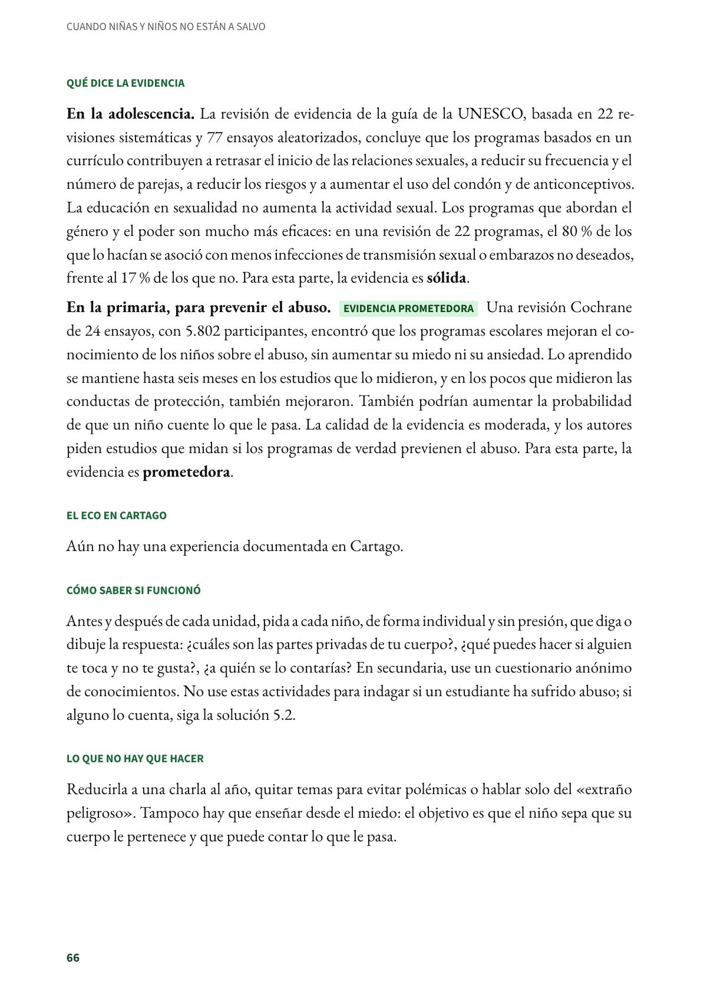

Enseñar a cuidar el propio cuerpo y a pedir ayuda: la educación integral en sexualidad
Un currículo que enseña, por etapas y según la edad, a conocer el cuerpo, a cuidar la propia intimidad y respetar la de los demás, a reconocer el abuso y a pedir ayuda. De preescolar a 11.º, con contenidos según la edad. Evidencia sólida.
PDF · 4 págs. · 85 KBEn resumen
- Evidencia: sólida.
- Para quién: De preescolar a 11.º, con contenidos según la edad. Ciencias naturales, ética, dirección de grupo y el proyecto pedagógico de educación para la sexualidad.
- Tiempo: Sesiones regulares en todos los grados, año tras año; no una charla al año.
- Materiales: Láminas del cuerpo con los nombres correctos, cuentos, tarjetas con situaciones y un buzón para preguntas anónimas.
- De dónde viene: Orientaciones técnicas internacionales de la UNESCO y otras agencias de la ONU (2018). En Colombia, la educación sexual es obligatoria desde preescolar.
Qué es
Un currículo que enseña, por etapas y según la edad, a conocer el cuerpo, a cuidar la propia intimidad y respetar la de los demás, a reconocer el abuso y a pedir ayuda. En la adolescencia suma el consentimiento, las relaciones, la igualdad de género y la salud sexual.
En Colombia, la Ley 115 de 1994 hace obligatoria la educación sexual en preescolar, básica y media, sin exigir una asignatura propia (art. 14). La Ley 1146 de 2007 pide a los colegios de básica y media incluir elementos de identificación temprana, prevención, autoprotección, detección y denuncia del abuso sexual (art. 11). Y la Ley 2503 de 2025 incluye la prevención del abuso sexual infantil, con estrategias de autocuidado, entre los fines de la Cátedra de Educación Emocional (art. 7).
Paso a paso en el aula, por edades
Los objetivos de cada etapa siguen la guía de la UNESCO.
- De 5 a 8 años: el cuerpo es mío. Enseñe los nombres correctos de las partes del cuerpo y cuáles son privadas. Explique que cada persona decide quién puede tocar su cuerpo, dónde y cómo. Ensaye con el grupo qué hacer si alguien los toca de una forma que los hace sentir incómodos: decir «no», alejarse y contarle a un adulto de confianza.
- De 5 a 8 años: a quién contarle. Pida a cada niño que nombre a sus adultos de confianza: ¿a quién le contarías si algo te hace sentir mal? Deje claro que el abuso nunca es culpa del niño, aunque venga de alguien conocido, de confianza o de la familia.
- De 9 a 12 años: reconocer y pedir ayuda. Hable de la privacidad del cuerpo en la pubertad y de la atención sexual no deseada. Explique qué es el abuso sexual, también el que ocurre en línea, que es ilegal y que hay autoridades y servicios que ayudan. Ensaye cómo pedir ayuda para uno mismo o para un amigo.
- De 12 a 15 años: intimidad y consentimiento. Trabaje el derecho a la intimidad y a la integridad del cuerpo, qué es el consentimiento y cómo denunciar el abuso, la violencia en la pareja y el acoso.
- De 15 a 18 años: relaciones con respeto. Profundice en el consentimiento y en las diferencias de poder y de género en las relaciones, que los programas eficaces abordan de forma explícita.
- En todas las edades, use métodos participativos: juego de roles, análisis de casos y preguntas anónimas. Informe a las familias y busque su apoyo: la guía de la UNESCO reconoce su papel fundamental.
Si no hay conectividad, o en la escuela rural
No requiere tecnología: láminas, cuentos y juego de roles. En las aulas multigrado, agrupe a los estudiantes por edades para los temas que cambian según la etapa. Ayude a cada niño a identificar más de un adulto de confianza, dentro y fuera de su casa.
Qué dice la evidencia
En la adolescencia. La revisión de evidencia de la guía de la UNESCO, basada en 22 revisiones sistemáticas y 77 ensayos aleatorizados, concluye que los programas basados en un currículo contribuyen a retrasar el inicio de las relaciones sexuales, a reducir su frecuencia y el número de parejas, a reducir los riesgos y a aumentar el uso del condón y de anticonceptivos. La educación en sexualidad no aumenta la actividad sexual. Los programas que abordan el género y el poder son mucho más eficaces: en una revisión de 22 programas, el 80 % de los que lo hacían se asoció con menos infecciones de transmisión sexual o embarazos no deseados, frente al 17 % de los que no. Para esta parte, la evidencia es sólida.
En la primaria, para prevenir el abuso. Una revisión Cochrane de 24 ensayos, con 5.802 participantes, encontró que los programas escolares mejoran el conocimiento de los niños sobre el abuso, sin aumentar su miedo ni su ansiedad. Lo aprendido se mantiene hasta seis meses en los estudios que lo midieron, y en los pocos que midieron las conductas de protección, también mejoraron. También podrían aumentar la probabilidad de que un niño cuente lo que le pasa. La calidad de la evidencia es moderada, y los autores piden estudios que midan si los programas de verdad previenen el abuso. Para esta parte, la evidencia es prometedora.
El eco en Cartago
Aún no hay una experiencia documentada en Cartago.
Cómo saber si funcionó
Antes y después de cada unidad, pida a cada niño, de forma individual y sin presión, que diga o dibuje la respuesta: ¿cuáles son las partes privadas de tu cuerpo?, ¿qué puedes hacer si alguien te toca y no te gusta?, ¿a quién se lo contarías? En secundaria, use un cuestionario anónimo de conocimientos. No use estas actividades para indagar si un estudiante ha sufrido abuso; si alguno lo cuenta, siga la solución 5.2.
Lo que no hay que hacer
Reducirla a una charla al año, quitar temas para evitar polémicas o hablar solo del «extraño peligroso». Tampoco hay que enseñar desde el miedo: el objetivo es que el niño sepa que su cuerpo le pertenece y que puede contar lo que le pasa.
Fuentes
Congreso de la República de Colombia. (1994). Ley 115 de 1994, art. 14 (modificado por la Ley 1029 de 2006). secretariasenado.gov.co
Congreso de la República de Colombia. (2007). Ley 1146 de 2007, art. 11. secretariasenado.gov.co
Congreso de la República de Colombia. (2025). Ley 2503 de 2025, art. 7. secretariasenado.gov.co
Haberland, N. A. (2015). The case for addressing gender and power in sexuality and HIV education: A comprehensive review of evaluation studies. International Perspectives on Sexual and Reproductive Health, 41(1), 31–42. doi.org
UNESCO, ONUSIDA, UNFPA, UNICEF, ONU Mujeres y OMS. (2018). International technical guidance on sexuality education: An evidence-informed approach (ed. rev.). UNESCO. unesdoc.unesco.org
Walsh, K., Zwi, K., Woolfenden, S. y Shlonsky, A. (2015). School-based education programmes for the prevention of child sexual abuse. Cochrane Database of Systematic Reviews, (4), CD004380. doi.org
Así se ve en el libro
4 páginas

